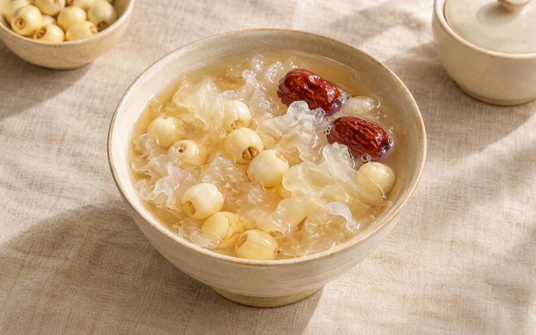

BLOOM TO TABLE
银耳莲子羹
银耳泡发撕小朵，与去芯莲子一同炖软；加入红枣，少量冰糖调味。
莲子 · 甜羹 · 约 2 人份
准备食材
- 干银耳 10 克
- 莲子 30 克
- 红枣 4—6 颗
- 清水约 1 升，冰糖少量
制作步骤
- 银耳按包装说明泡发，去除硬蒂、洗净后撕成小朵；莲子按产品说明处理并去芯。
- 银耳和莲子放入锅中，加水煮开后转小火，锅盖留缝，避免溢锅。
- 炖约 40—60 分钟，期间适当搅动；加入洗净的红枣继续炖至莲子软糯、银耳汤汁稍稠。
- 按口味加入少量冰糖，煮化后关火。
选择可靠渠道的食用原料，不采摘景区或绿化带花叶入菜。本文为家常烹饪参考，并非中江独有菜式。 用量可按人数与口味调整。